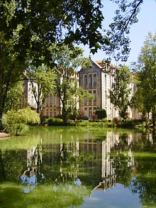
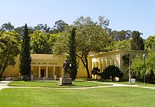
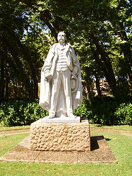
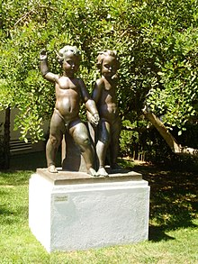
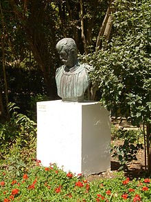
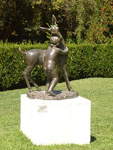
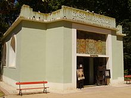

Sobre
Pagina Inicial
História
Sobre
FAQs
Avalia-nos
No parque D. Carlos temos muito que visitar como por exemplo:
Pavilhões

Museu José Malhoa

Estátua de Ramalho Ortigão

"Grupo Decorativo"

Busto de Silva Porto

Ternura

Escultura do Lago
Casa dos Barcos
